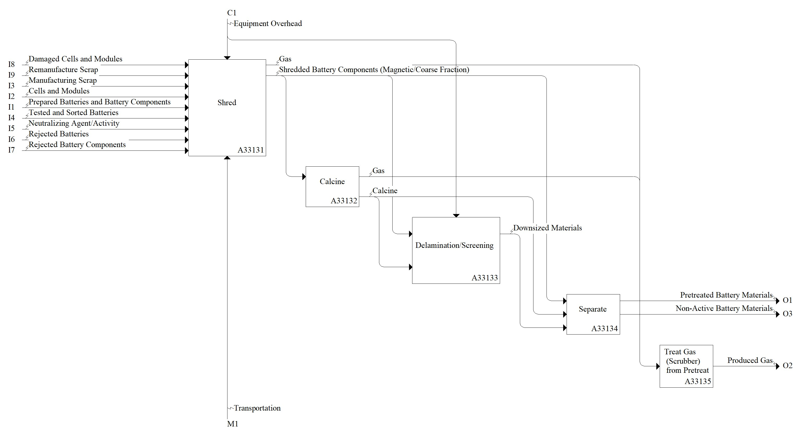

Model: Mechanically/Chemically Pretreat Material

Description
Notes:This activity is completed to reduce the size and heterogeneity of materials, further sort battery material and cells, or improve the state of safety of the material. May include a neutralizing step.
This often results in the formation of black mass (aka black powder, black sand, etc.), which is material that can undergo hydro- or pyrometallurgical activities.
Definitions:
Feed (stock) - material being supplied to a processing machine.
Black Mass - shredded battery material.
Pre-treatment - activity (e.g., drying, grinding, grading) applied to a material before it enters the main treatment process. Adapted from ISO 11074:2025, 3.343.
Standards:
None
References:
Mousa E, Hu X, Ånnhagen L, Ye G, Cornelio A, Fahimi A, Bontempi E, Frontera P, Badenhorst C, Santos AC, Moreira K, Guedes A, Valentim B (2022) Characterization and thermal treatment of the black mass from spent lithium-ion batteries. Sustainability, 15(1), 15. https://doi.org/10.3390/su15010015
Pinegar H, Smith YR (2019) End-of-life lithium-ion battery component mechanical liberation and separation. JOM, 71(12), 4447-4456. https://doi.org/10.1007/s11837-019-03828-7
Pinegar H, Smith YR (2020) Mechanical Beneficiation of End-of-Life Lithium-Ion Battery Components. In Energy Technology 2020: Recycling, Carbon Dioxide Management, and Other Technologies (pp 259-267). Cham: Springer International Publishing. https://doi.org/10.1007/978-3-030-36830-2_25
Wang H, Liu C, Qu G, Zhou S, Li B, Wei Y (2023) Study on pyrolysis pretreatment characteristics of spent lithium-ion batteries. Separations, 10(4), 259. https://doi.org/10.3390/separations10040259
Parent Activity: Mechanically/Chemically Pretreat Material
Disclaimer: Certain commercial equipment, instruments, or materials are identified in this documentation to foster understanding. Such identification does not imply recommendation or endorsement by the National Institute of Standards and Technology, nor does it imply that the materials or equipment identified are necessarily the best available for the purpose.